This tutorial explains how to link a tutorial from the KBase git docs repo to the kbase.us website using the C5 Content Management System.
Please do not make this tutorial "live" or viewable to the public.
1. Check a tutorial into the git docs repo.
2. Log in to C5. If you have permissions set up, you can gain access via your browser by visiting kbase.us/login. If you are attempting access away from Argonne, you will need to connect via your VPN or have some other method in place.
3. Once logged in, go to the Site Map and choose the option to Add Multiple Pages. (Note that there is more than one way to add a page, but this is the method we are recommending.)
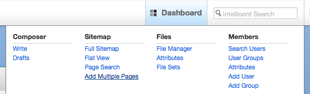
4. In the "Add Multiple Pages" dialog that appears, click "Select Page" then locate the parent page for your new tutorial. Select that parent page by clicking on it. For most User Tutorials, the parent page can be found by expanding "For Users" and selecting "Tutorials" beneath that level.
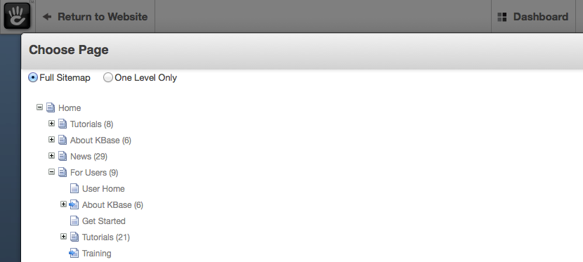
5. For "Page Type," select "left sidebar nav page." This is the template used for tutorials.
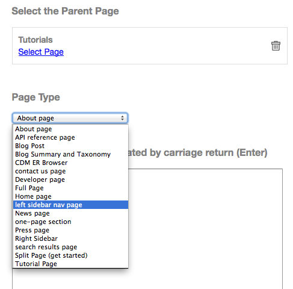
6. For "Enter page names separated by carriage return (Enter)," type the title you wish to give this new file. It does not have to match the filename in the repo.
7. For "Description (will be added to all pages above)," enter a reasonable description for the tutorial that will be readily understood by your audience. This will be displayed on the website to the public.
8. The section for "Header Extra Content (will be added to all pages above)" can be left empty.
9. For "Meta Description (will be added to all pages above)," supply a brief description.
10. For "Meta Keywords (will be added to all pages above)," type in keywords that can be used to search for this tutorial.
11. Below these, there are several statements followed by checkboxes:
Exclude pages from navigation?
Exclude pages from page list?
Exclude pages from search index?
Exclude pages from sitemap.xml?
Check the box next to all of these items to exclude your incomplete tutorial pages until it is ready for public viewing.
12. Click Add
13. The page should now show up in the site map at the bottom of the list of tutorial pages. For this example, the file is named "Example Tutorial by Jen."
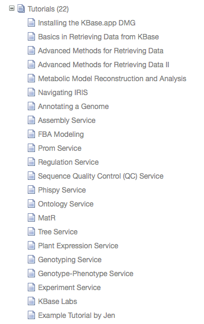
14. The next step is to select an existing, complete tutorial and copy some of the formatting from that page to your new tutorial page. Open up an example tutorial page that has already been completed. Under Tutorials, locate the first tutorial in the list, titled "Installing the KBase.app DMG. Open it by clicking on it and selecting "Visit."
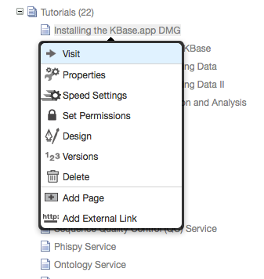
15. Once on that page, go into Edit mode by selecting "Edit" in the upper left corner, then click the "Edit this Page" button.
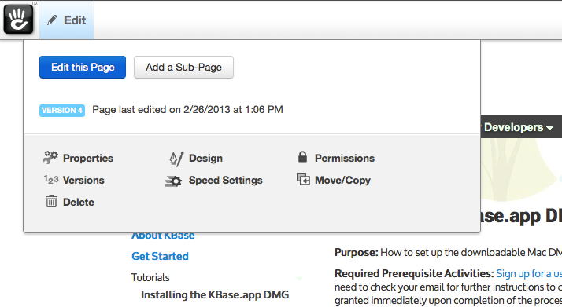
16. Now that you are in edit mode, you can copy formatting from the page regions to your clipboard, and later paste this formatting into your new tutorials page. Click on the Page Title and Left Content regions of the completed tutorial page. For each, select to copy to clipboard. By doing this you are copying only the functionality, not the exact text that you see in these sections. You do not need to copy information from the top header or footer regions, just the page content sections.
Copy from the top page content region
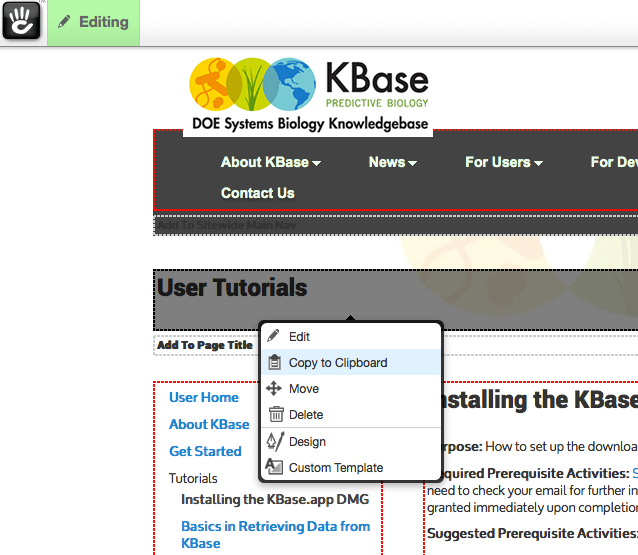
Also copy the side navigation.
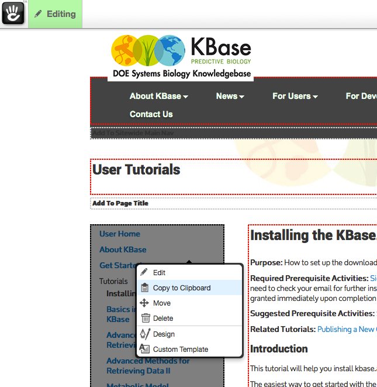
17. After copying formatting to your clipboard, click again in the upper left corner of the screen where it says "Editing" and select the option to "Exit Editing Mode." If it asks you what to do with changes, select the option to discard any changes. You should not make any changes to this existing tutorial page.
18. Using the same procedures as described above, locate your new tutorial page in the sitemap, visit it, and enter into the editing mode.
19. Paste the copied formatting from your clipboard into the correct blocks from the corresponding sections in the completed tutorial.
20. Next, in the main body of your new tutiorial, click on the section called "Add to Right Content," and in the dialog that appears, choose "Add Block."
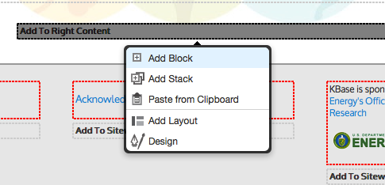
21. Type html, then select the "html file" option that appears.
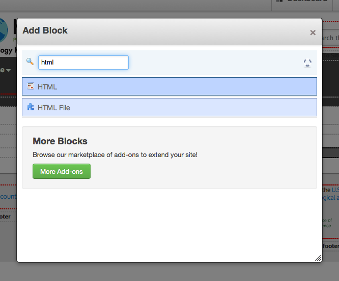
22. Type in the correct path to the new tutorial document in the git docs repo.
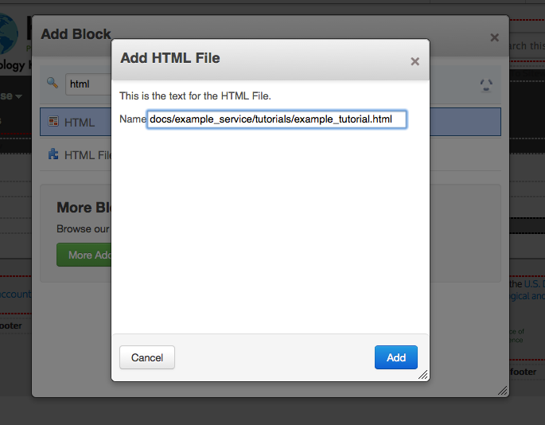
Note that there is no beginning forward slash before "docs" in the path. The page should populate with content from the tutorial in the git doc repo. If you receive an error message, check your path and filenames in the docs repo.
23. When you are happy with the new tutorial page, go back into the page properties for your new tutorial page and deselect all of the check boxes. This will include your new tutorial in navigation, lists, and search, and it will be viewable by the public.